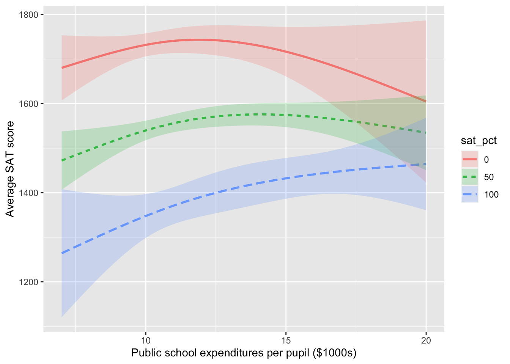

| sex | width |
|---|---|
| G | 9.0 |
| G | 8.5 |
| G | 9.0 |
| G | 9.5 |
| B | 8.6 |
| B | 8.4 |
| B | 8.8 |
| B | 9.4 |
Covariates
Dr. Mary Meyer is a statistics professor at Colorado State University. In 2006, she published an article recounting an episode from family life:
When my daughter was in fourth grade, I took her shopping for dress shoes. I was disappointed in the quality of girls’ shoes at every store in the mall. The shoes for boys were sturdy and had plenty of room in the toes. On the other hand, shoes for girls were flimsy, narrow, and had pointed toes. In spite of the better construction for boys, the costs of the shoes were similar! For children the same age, boys had shoes they could run around in, while girls’ shoes were clearly for style and not comfort.
Upon complaining about this state of affairs, I was told by sales representatives in two stores that boys actually had wider feet than girls, so needed wider shoes. Being very skeptical, I thought I would test this claim.
We’ll return to Dr. Meyer’s project in a little bit. But now let’s imagine how this situation might be addressed by someone who has not yet developed good statistical thinking skills. We’ll call this imagined protagonist “Mr. Shoebuyer.” Since the salesmen’s claim was that girl’s feet are narrower than boys, Mr. Shoebuyer heads out to measure the widths of girls’ and boys’ shoes.
A shoe store provides convenient place to measure the widths of lots of different shoe styles. Mr. Shoebuyer gets to the shoe store, heads to the children’s section and starts measuring. For each shoe on display he records the shoe width and whether the shoe is for girls or boys. Here are his data:
Once back home, Mr. Shoebuyer uses his calculator to find the mean width of the shoes in each group. His results surprise him:
| sex | mean width |
|---|---|
| Girls | 9.0 cm |
| Boys | 8.8 cm |
Mr. Shoebuyer happens to be your uncle. He knows that you are taking a statistics course and writes you with a request to recheck his arithmetic. Putting on your statistical thinking hat, you see immediately that what’s missing is a confidence interval on the effect size of sex on shoe width.
Shoebuyer_data %>% lm(width ~ sex, data=.) %>% confint() 2.5 % 97.5 %
(Intercept) 8.2857603 9.3142397
sexG -0.5272448 0.9272448At the Thanksgiving break, you see your uncle. You say, “Sorry, Uncle, but you don’t have nearly enough data to conclude that girls’ feet are wider than boys’.” Translating your confidence interval into plus-or-minus format, you point out that the difference between the sexes is \(0.2 \pm 0.8\) cm. “You’ll need enough data to get that 0.8 margin of error down to something like 0.2.” You also point out that a shoe store might not be an appropriate place to collect data. “It’s the feet, not the shoes, that you want to look at.”
Dr. Meyer worked worked with the third- and fourth-grade teachers at her daughter’s school to collect data to illuminate the matter. Being a statistical thinker, before carrying out the data collection, she thought about what data would illuminate the matter. Her data, a sample of size \(n=39\), are recorded in the KidsFeet data frame.
lm(width ~ sex, data = KidsFeet) %>% confint() 2.5 % 97.5 %
(Intercept) 8.9758882 9.40411181
sexG -0.7125476 -0.09903131Translated to plus-or-minus format, this confidence interval is \(-0.4 \pm 0.3\). Whatever the format, Dr. Meyer’s data provides some evidence that girls’ feet are narrower than boys’.
As a statistical thinker, Dr. Meyer knows that even though the foot width is the original quantity of interest, other factors might be playing a role in the system. For example, boys’ feet might trend longer or, perhaps, shorter than girls’ feet. This should be taken into account. What we want is the effect size of sex on width, holding length constant. After all, when buying shoes you tell the salesperson your foot length (or “size”) and they bring you shoes of that size to choose among.
lm(width ~ sex + length, data=KidsFeet) %>% confint() 2.5 % 97.5 %
(Intercept) 1.1048182 6.17751841
sexG -0.4947759 0.02974084
length 0.1202348 0.32181513Although sex is the explanatory variable of primary interest to Dr. Meyer’s question, she knows to include other explanatory variables that might be playing a role. Such explanatory variables, not of direct interest, are called “covariates.” Dr. Meyer’s expertise led her to think about possible covariates before collecting her data. That’s why she went to the trouble of measuring foot length in addition to foot width.
The confidence interval on the sexG coefficient includes zero when length is taken into account. Dr. Meyer’s little study provides evidence that, even if girls’ shoes tend narrower than boys’, the feet inside them have about the same shape for both sexes.
“All other things being equal”
The common phrase “all other things being equal” is an important qualifier in describing relationships. To illustrate: A simple claim in economics is that a high price for a commodity reduces the demand. For example increasing the price of heating fuel will reduce demand as people turn down thermostats in order to save money. But the claim can be considered obvious only with the qualifier all other things being equal. For instance, the fuel price might have increased because winter weather has increased the demand for heating compared to summer. Thus, higher prices may be associated with higher demand. Unless you hold other variables constant – e.g., weather conditions – increased price may not in fact be associated with lower demand.
In fields such as economics, the Latin equivalent of “all other things being equal” is sometimes used: “ceteris paribus”. So, the economics claim would be, “higher prices are associated with lower demand, ceteris paribus.”
Although the phrase “all other things being equal” has a logical simplicity, it’s impractical to implement “all.” Instead of the blanket “all other things,” it’s helpful to be able to consider just “some other things” to be held constant, being explicit about what those things are. Other phrases along these lines are “taking into account …” and “controlling for ….” Such phrases apply when you want to examine the relationship between two variables, but there are additional variables that may be coming into play. The additional variables are called “covariates” or “confounders”.
Example: Covariates and Death
This news report appeared in 2007:
Heart Surgery Drug Carries High Risk, Study Says. A drug widely used to prevent excessive bleeding during heart surgery appears to raise the risk of dying in the five years afterward by nearly 50 percent, an international study found. The researchers said replacing the drug—aprotinin, sold by Bayer under the brand name Trasylol—with other, cheaper drugs for a year would prevent 10,000 deaths worldwide over the next five years.
Bayer said in a statement that the findings are unreliable because Trasylol tends to be used in more complex operations, and the researchers’ statistical analysis did not fully account for the complexity of the surgery cases. The study followed 3,876 patients who had heart bypass surgery at 62 medical centers in 16 nations. Researchers compared patients who received aprotinin to patients who got other drugs or no antibleeding drugs. Over five years, 20.8 percent of the aprotinin patients died, versus 12.7 percent of the patients who received no antibleeding drug. [This is a 64% increase in the death rate.] When researchers adjusted for other factors, they found that patients who got Trasylol ran a 48 percent higher risk of dying in the five years afterward. The other drugs, both cheaper generics, did not raise the risk of death significantly. The study was not a randomized trial, meaning that it did not randomly assign patients to get aprotinin or not. In their analysis, the researchers took into account how sick patients were before surgery, but they acknowledged that some factors they did not account for may have contributed to the extra deaths. - Carla K. Johnson, Associated Press, 7 Feb. 2007
The report involves several variables. Of primary interest is the relationship between (1) the risk of dying after surgery and (2) the drug used to prevent excessive bleeding during surgery. Also potentially important are (3) the complexity of the surgical operation and (4) how sick the patients were before surgery. Bayer disputes the published results of the relationship between (1) and (2) holding (4) constant, saying that it’s also important to hold variable (3) constant.
With aprotinin, the total relationship involves a death rate of 20.8 percent of patients who got aprotinin, versus 12.7 percent for others. This implies an increase in the death rate by a factor of 1.64. When the researchers looked at a partial relationship (holding constant the patient sickness before the operation), the death rate was seen to increase by less: a factor of 1.48. In evaluating the drug, it’s best to examine its effects holding other factors constant. So, even though the data directly show a 64% increase in the death rate, 48% is a more meaningful number since it adjusts for covariates such as patient sickness. The difference between the two estimates reflect that sicker patients tended to be given aprotinin. As the last paragraph of the story indicates, however, the researchers did not take into account all covariates. Consequently, it’s hard to know whether the 48% number is a reliable guide for decision making.
“Mutatis mutandis”
Using covariates in models enable the relationship between a response and an explanatory variable to be described “all other things being equal.” Another phrase used in news stories is “after adjusting for …”, since the all in “all other things” is more properly restricted just to those factors represented by the covariates actually used in a model. So, Dr. Meyer’s foot width results might be stated in everyday language as, “After adjusting for foot width, she found no difference in the widths of girls’ and boys’ feet.”
Not to include covariates in a model amounts to “letting other things change as they will.” In Latin this is “mutatis mutandis.” In the foot-width example, the model width ~ sex looks at the differences in foot width for the two sexes. But sex is not the only thing “changed” when comparing foot width. Since width ~ sex ignores all other factors than sex, it is comparing boys and girls letting other things change as they will. In this case, comparing boys and girls involves not just the possible differences in foot width but the differences as well in other factors: foot length, body weight, etc.
Example: One change can bring another
I was once involved in a budget committee that recommended employee health benefits for the college at which I work. At the time, college employees who belonged to the college’s insurance plan received a generous subsidy for their health insurance costs. Employees who did not belong to the plan received no subsidy but were instead given a modest monthly cash payment. After the stock-market crashed in year 2000, the college needed to cut budgets. As part of this, it was proposed to eliminate the cash payment to the employees who did not belong to the insurance plan. This proposal was supported by a claim that this would save money without reducing health benefits. I argued that this claim was based on an “all other things being equal” analysis: how expenditures would change assuming that the number of people belonging to the insurance plan remained constant. But in reality, the policy change would play out mutatis matandis; the loss of the cash payment would cause some employees, who currently received health benefits through their spouse’s health plan, to switch to the college’s health plan. That’s what happened, contributing to an increase of health-care expenses.
Example: Spending and student performance
To illustrate how covariates set context, consider an issue of interest to public policy-makers in many societies: How much money to spend on children’s education? In the United States, for instance, educational budget policy is set mainly on a state-by-state level. State lawmakers are understandably concerned with the quality of the public education provided, but they also have other concerns and constraints and constituencies who give budget priority to other matters.
In evaluating the various trade-offs they face, lawmakers would be helped by knowing how increased educational spending will shape educational outcomes. What can available data tell us? Unfortunately, there are various political constraints that work against states adopting and publishing data on a common measure of genuine educational outcome. Instead, we have high-school graduation rates, student grades, etc. These have some genuine meaning but also can reflect the way the system is gamed by administrators and teachers and which cannot be easily compared across states. At a national level, we have college admissions tests such as the ACT and SAT. Perhaps because these tests are administered by private organizations and not state governments, it’s possible to gather data on test-score outcomes on a state-by-state basis and collate these with public spending information.
Figure 1 shows average SAT score in 2010 in each state versus expenditures per pupil in public elementary and secondary schools. Laid on top of the data is a flexible linear model (and its confidence band) of SAT score versus expenditure. The overall impression given by the model is that the relationship is negative, with lower expenditures corresponding to higher SAT scores. But the confidence bands are broad and it is possible to find a smooth path through the confidence band that has almost zero slope. Either way, the conventional wisdom that higher spending produces better school outcomes is not supported by this graph.
There are other factors that play a role in shaping education outcomes: poverty levels, parental education, how the educational money is spent (higher pay for teachers or smaller class sizes? administrative bloat?), and so on. Modeling educational outcomes solely by expenditures ignores these other factors.
At first glance, it’s tempting to ignore these additional factors. We may not have data on them. And insofar as our interest is in understanding the relationship between expenditures and education outcomes, we are not directly concerned with the additional factors. This lack of direct concern, however, doesn’t imply that we should totally ignore them but that we should do what we can to “hold them constant”.
To illustrate, let’s consider a factor on which we do have data: the fraction of eligible students (those in their last year of high school) who actually take the test. This varies widely from state to state. In a poor state where few students go to college the fraction can be very small (Alabama 8%, Arkansas 5%, Mississippi 4%, Louisiana 8%). In some states, the large majority of students take the SAT (Maine 93%, Massachusetts 89%, New York 89%). In states with low SAT participation rates, the students who do take the test are applying to schools with competitive admissions. Such strong students can be expected to be get high scores. In contrast, the scores in states with high participation rates reflect both strong and weak students; they will be lower on average than in the low-participation states.
Putting the relationship between expenditure and SAT scores in the context of the fraction taking the SAT can be done by using fraction as a co-variate, that is, building the model SAT ~ expenditure + fraction rather than just SAT ~ expenditure. Figure 2) shows a model with fraction taken into account.

Note that the effect size of spending on SAT scores is positive when the expenditure level is less than $10,000 per pupil. And notice that when the fraction taking the SAT is near 0, the average scores don’t depend on expenditure. This suggests that among elite students, expenditure doesn’t make a discernable difference: it’s the students, not the schools that matter.
The relationship shown in Figure 1 is genuine. So is the very different relationship seen in Figure 2. How can the same data be consistent with two utterly different displays? The answer, perhaps unexpectedly, has to do with the connections among the explanatory variables. Whatever the relationship between each individual explanatory variable and the response variable, the appearance of that relationship will depend on how explanatory variables are connected to each other.
Practice with a DAG
To demonstrate that the apparent relationship between an explanatory variable and a response variable – for instance, school expenditures and education outcomes – depends on the connections of the explanatory variable with covariates, let’s move away from the controversies of political issues and study some systems where everyone can agree exactly how the variables are connected. We’ll look at data produced by simulations where we specify exactly what the connections are.
A simulation implements a hypothesis: a statement about that might or might not be true about the real world. As a starting point for our simulation, let’s imagine that education outcomes increase with school expenditures in a very simple way: each $1000 increase in school expenditures per pupil results in an average increase of 10 points in the SAT score: an effect size of 0.01 points per dollar. Thus, the imagined relationship is:
\[\mbox{sat} = 1100 + 0.01 * \mbox{dollar expenditure}\]
Let’s also imagine that the fraction of students taking the SAT test also influences the average test score with an effect size of -4 sat points per percentage point. Adding this effect into the simulation leads to an imagined relationship of
\[\mbox{sat} = 1100 + 0.01 * \mbox{dollar expenditure} - 4 * \mbox{participation percentage} .\]
And, of course, there are other factors, but we’ll treat their effect as random with a typical size of \(\pm\) 50 points.
To complete the simulation, we’ll need to set values for dollar expenditures and participation percentage. We’ll let the dollar expenditures vary randomly from $7000 to $18,000 from one state to another and the participation percentage vary randomly from 1 to 100 percentage points.
Notice that in this simulation, both participation percentage and expenditures affect education outcomes, but there is no connection at all between the two explanatory variables. That is, the graphical causal network is that shown in Figure @ref(fig:school-sim-1).
dag_school1expenditure ~ unif(7000, 18000)
participation ~ unif(1, 100)
outcome ~ 1100 + 0.01 * expenditure - 4 * participation + eps(50)dag_draw(dag_school1)
We can generate simulated data and use the data to train models. ?@fig-school-data-1 shows the data and two different models.
Dat1 <- sample(dag_school1, size=500)
mod1_1 <- lm(outcome ~ ns(expenditure,2), data = Dat1)
mod1_2 <- lm(outcome ~ ns(expenditure,2) * participation, data = Dat1)
mod_plot(mod1_1, interval="prediction") %>%
gf_point(outcome ~ expenditure, data = Dat1)
mod_plot(mod1_2, interval="prediction") %>%
gf_point(outcome ~ expenditure, alpha=~participation, data = Dat1, inherit=FALSE)
outcome ~ expenditure - (b) The model with participation as a covariate: outcome ~ expenditure + participation Both models (a) and (b) show the same effect size for outcome with respect to expenditure.
outcome ~ expenditure - (b) The model with participation as a covariate: outcome ~ expenditure + participation Both models (a) and (b) show the same effect size for outcome with respect to expenditure.The relationship between outcome and expenditure can be quantified by the effect size, which appears as the slope of the function. You can see that when the explanatory variables are unconnected, as in Figure 3, the functions have the same slope.
Now consider a somewhat different simulation. Rather than expenditures and participation being unconnected (as in the causal diagram shown in Figure 3), in this new situation we will posit a connection between the two explanatory variables. We’ll image that there is some broad factor, labeled “culture” in ?@fig-school-sim-2, that influences both the amount of expenditure and the participation in the tests used to measure education outcome. For instance, “culture” might be the importance that the community places on education or the wealth of the community.
dag_school2culture ~ unif(-1, 1)
expenditure ~ 12000 + 4000 * culture + eps(1000)
participation ~ (50 + 30 * culture + eps(15)) %>% pmax(0) %>%
pmin(100)
outcome ~ 1100 + 0.01 * expenditure - 4 * participation + eps(50)dag_draw(dag_school2)
participation and expenditure as a function of culture.Again, using data from this simulation, we can train models:
outcome ~ expenditures, which has no covariates.
outcome ~ expenditures + participation, which includes participation as a covariate.
?@fig-school-data-2 shows the data from the new simulation (which is the same in both subplots) and the form of the function trained on the data. Now model (a) shows a very different relationship between expenditures and outcome than model (b).


Since we know the exact mechanism in the simulation—outcome increases with expenditure—we know that model (b) matches the workings of the simulation while model (a) does not.
For the simulation where expenditure and participation share a common cause, failing to stratify on participation – that is, looking at the points in @fig:-school-data-2 (a) but ignoring color – gives an utterly different result than if the stratification includes participation.